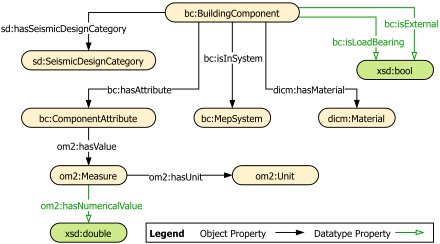

<h2 id="desc" class="list">Ontology of Building Components: Description <span class="backlink"> back to <a href="#toc">ToC</a></span></h2>

<span class="markdown">It is the component layer between the fragility definitions (SeisFront) and the building data (ifcOWL and ifcLit). The alignment ontology maps it to the IFC side.

</span>
